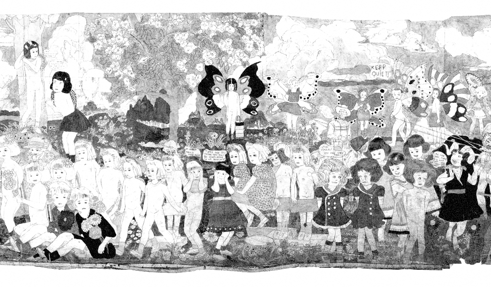

Specimen No. XV | Written by Maya Lee
An elderly man, who had worked as a hospital porter all his life since the age of 17, is taken to a nursing home to await his death. The building’s owner, who enters the room to clean it, discovers a 15,000-page novel typed by the old man over several decades, along with some 300 enormous illustrations he had drawn himself for the novel.

In his work, one often sees Vivian Girls and butterflies appearing together.
His work, The Story of the Vivian Girls, tells of the kingdom of Abien, once living in peace, as it struggles against an invasion by the nation of Glanderia, which seeks to enslave its children. The girls in the illustrations often appear with the wings of giant butterflies or in hybrid forms fused with butterflies. Here, the butterfly wings serve as a defence mechanism, protecting the fragile children from war and abuse. For Dagger, who spent his entire life in social isolation, the butterfly was the sole means by which he could shed his wretched physical form and seek refuge in a world of boundless imagination. ⁋